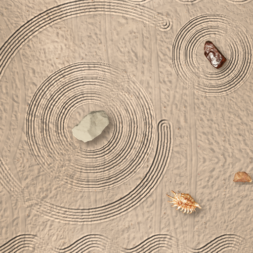

<- all projects

Sandline Studio
PC
Volume
Live
Draw on the beach. Let the sea take it.
On the island of Lumen Bay, an old beach artist used to rake giant drawings into the sand at low tide for anyone who asked. Then they stopped. You pick up their rake, and the bottles start washing up. Read each request, rake inside the faint shapes, keep the beach tidy and place the stones, shells and driftwood the bottle asks for, then fly the drone for a photo before the tide arrives and washes your picture away. 48 bottles over four beaches, 12 tide glyphs from a lost festival, six rakes and a Zen beach with no clock.